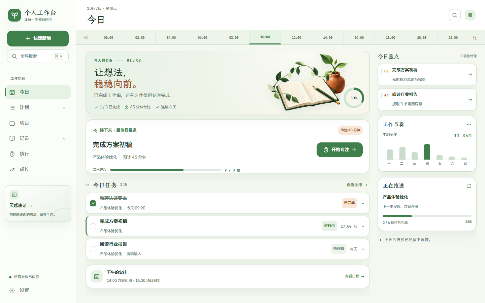
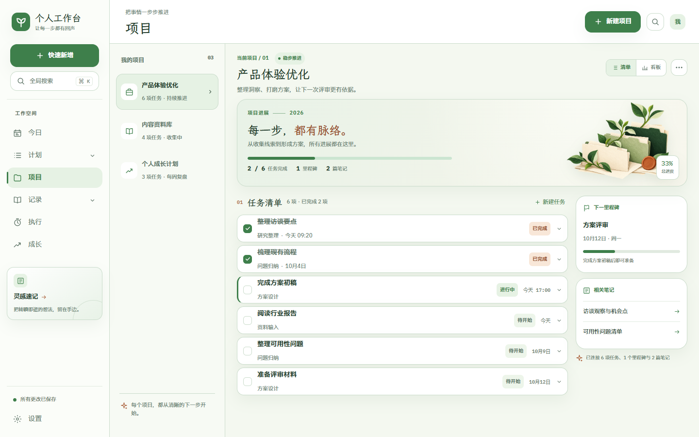
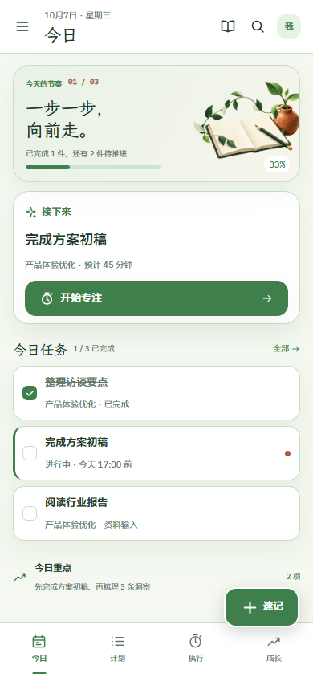
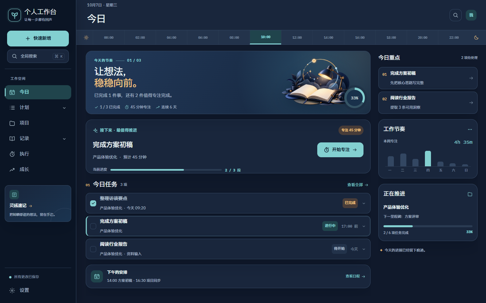
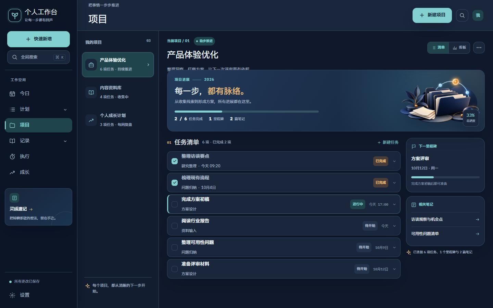
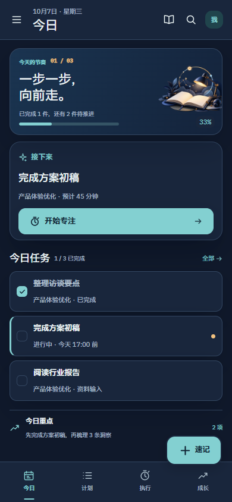
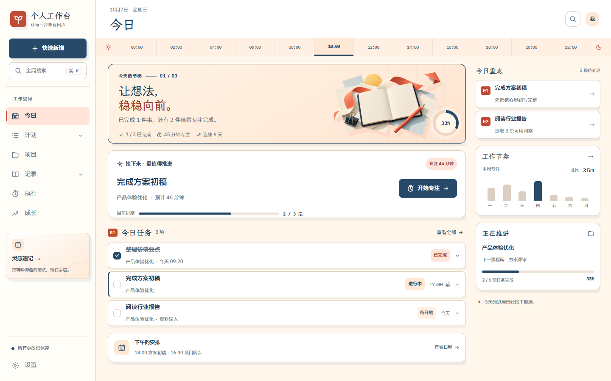
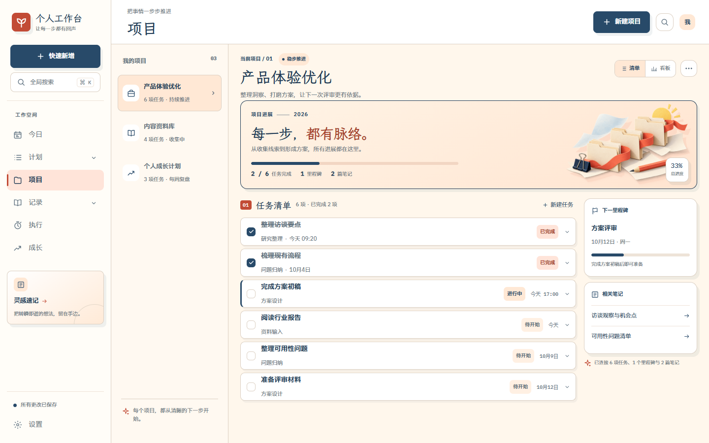
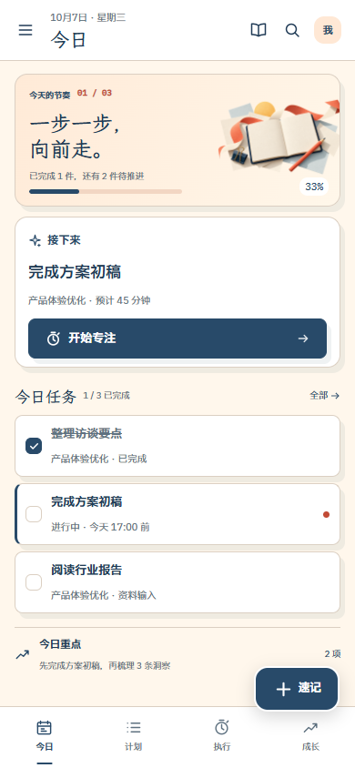

01柔壤图鉴
新芽绿 × 陶土色 · 植物生长与轻纸感层次
桌面 · 今日1440 × 900

桌面 · 项目与任务1440 × 900
手机 · 今日390 × 844


02夜航工作室
深靛蓝 × 冷青 × 琥珀 · 安静的时间轨道
桌面 · 今日1440 × 900

桌面 · 项目与任务1440 × 900
手机 · 今日390 × 844


03日光编辑室
奶油白 × 深蓝 × 珊瑚橘 · 杂志编排与文具拼贴
桌面 · 今日1440 × 900

桌面 · 项目与任务1440 × 900
手机 · 今日390 × 844

